#华与华每周新作# 栏目是华与华公众号，用来抢鲜发布华与华可以揭秘的近期新作，让大家先睹为快。本期为你分享的是：华与华为炊大皇创意的超级符号及品牌谚语。炊大皇，是一家 38 年专注做锅的炊具品牌。炊大皇锅具远销全球 68 国，是炊具行业国家标准参与制定者，其创始人王林兴为铸铁锅非物质文化遗产传承人。基于企业的资源禀赋和货架思维，我们为炊大皇创作了将“锅+皇”结合的创意 LOGO 、私有化的“帝王黄”品牌色、强势包围终端的超级花边“黄黑格”，及“锅中之皇，炊大皇”的品牌谚语。
#华与华新作#炊大皇超级符号
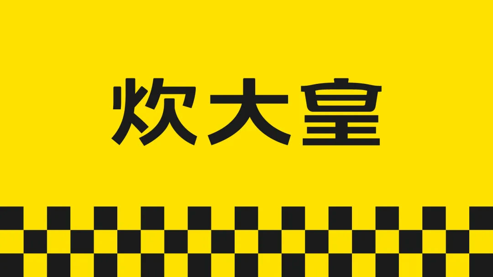
▲华与华为炊大皇创意的超级符号
品牌标志的设计目的是为了降低品牌的识别、记忆、传播成本，实现三个一目了然：一目了然见名字、一目了然见行业、一目了然具象可描述。因此，我们在超级符号创作上做了三个戏剧性：1 、将【锅盖】及【皇】字结合，做字体创意设计，突出炊大皇的行业属性；2 、选用私有化极强的【帝王黄】品牌色，发挥炊大皇品牌与生俱来的戏剧性；3 、强势占领终端的品牌超级花边【黄黑格】，获得货架陈列优势。
▲将【锅盖】及【皇】字结合，创意“皇”字标
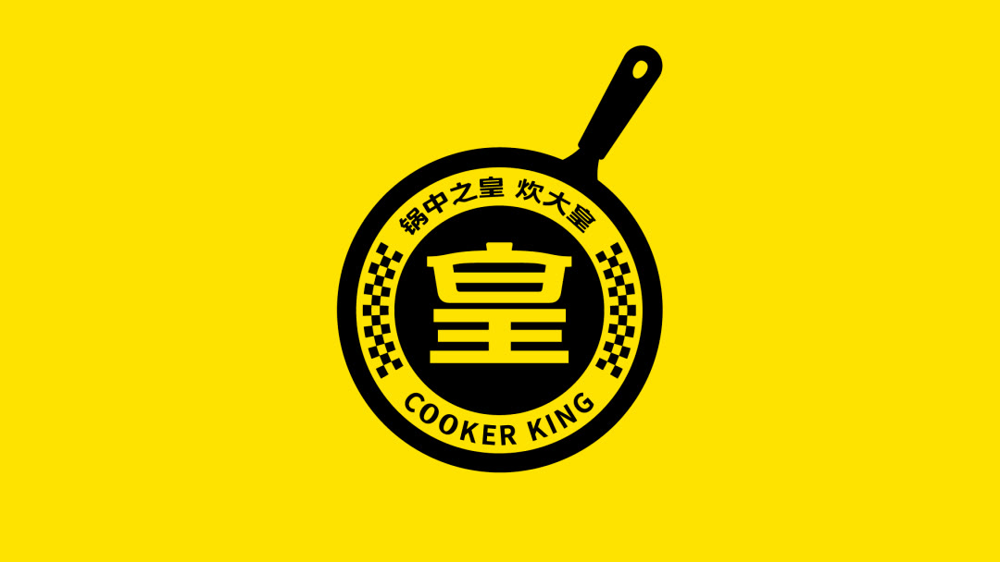
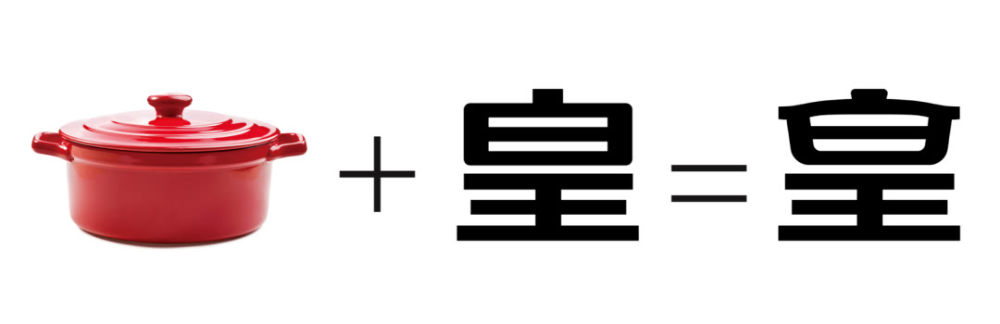
▲炊大皇超级符号在终端的应用
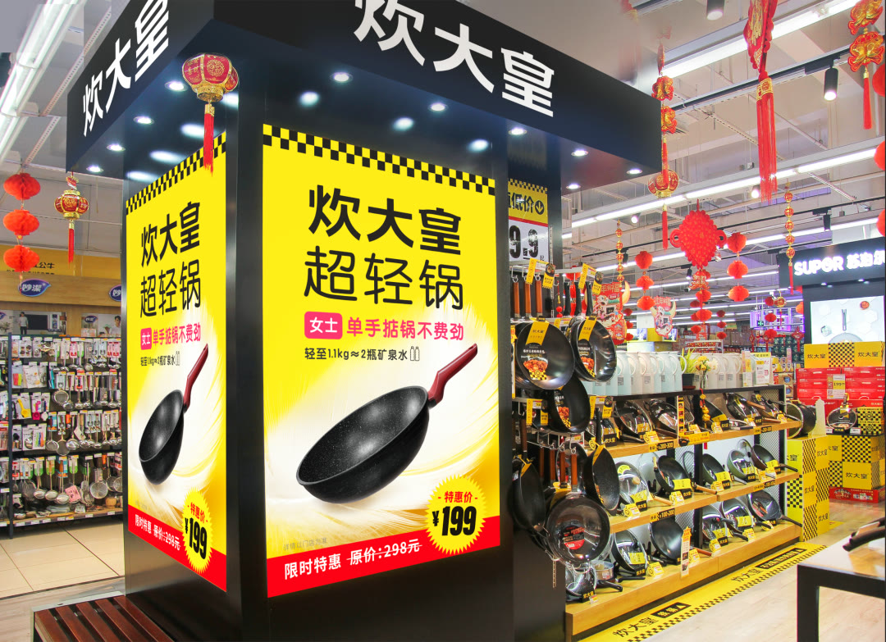
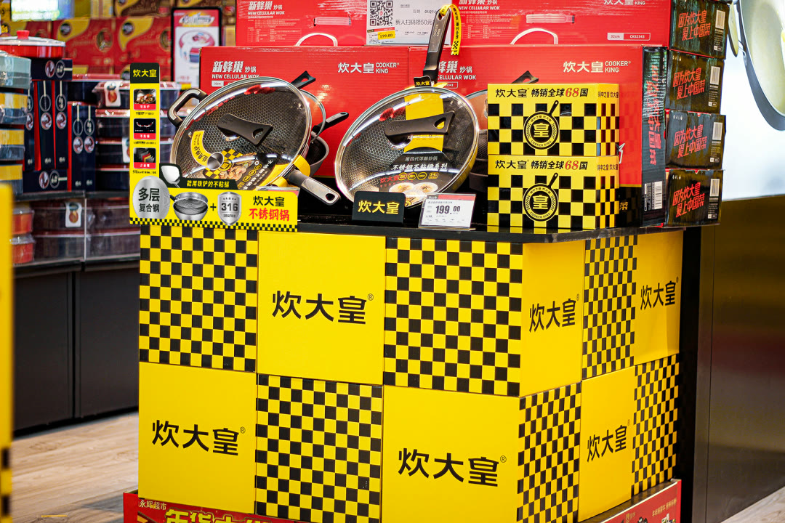
▲炊大皇超级符号在产品上的应用
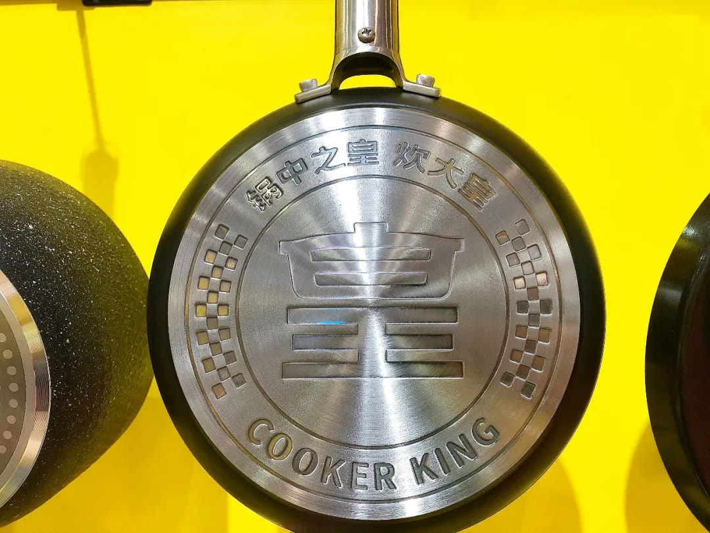
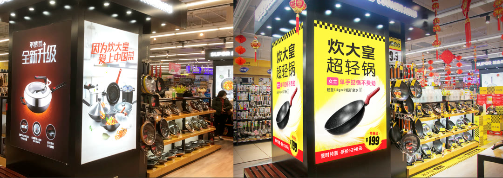
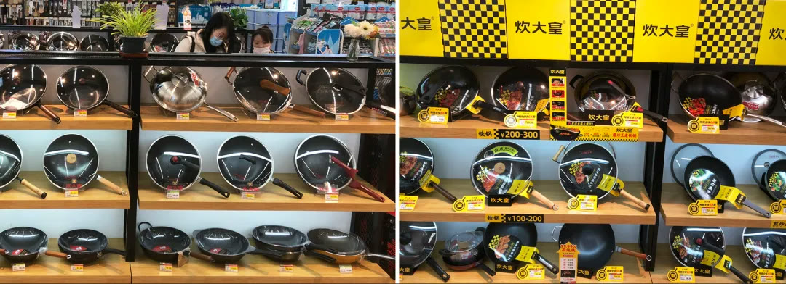
▲炊大皇超级符号在终端应用的对比（右新）
此外，为突出品牌的资源禀赋，将“炊大皇”这个值一个亿的名字无限放大，我们创造了“锅中之皇，炊大皇”的品牌谚语。
品牌谚语是口号最高的境界，而“锅中之皇，炊大皇”是只有炊大皇能用的口号，它有一种“亲切的权威感”、让人乐于接受，并且有一种接受的愉悦感。同时它方便消费者记忆和传播，让顾客替我们传，将品牌与生俱来的戏剧性传播出去。
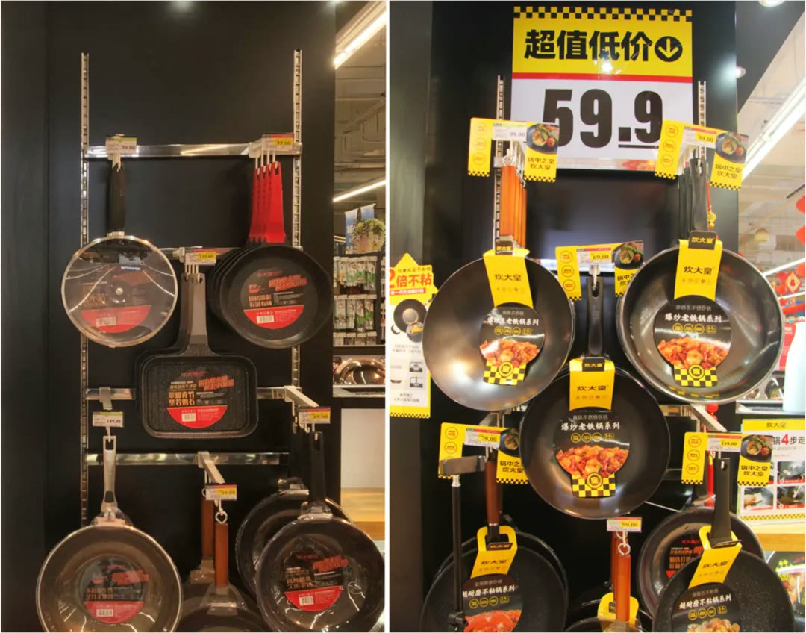
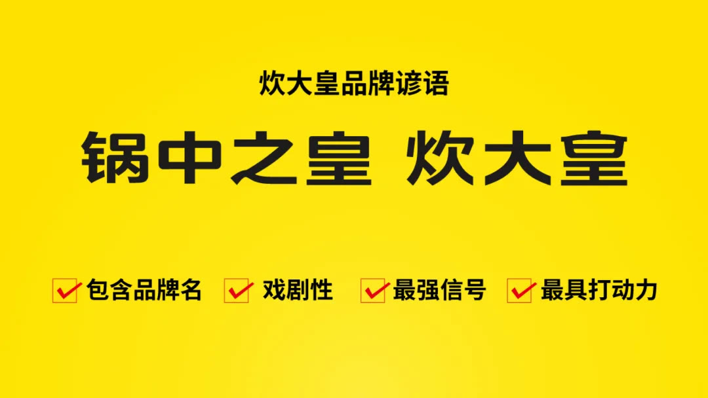
同时，我们通过对炊大皇企业的深度寻宝，挖掘了炊大皇对外传播的核心话语体系，为社会提供了品牌最有力的履历表：畅销全球 68 国、国家标准参与制定者、非物质文化遗产传承人。
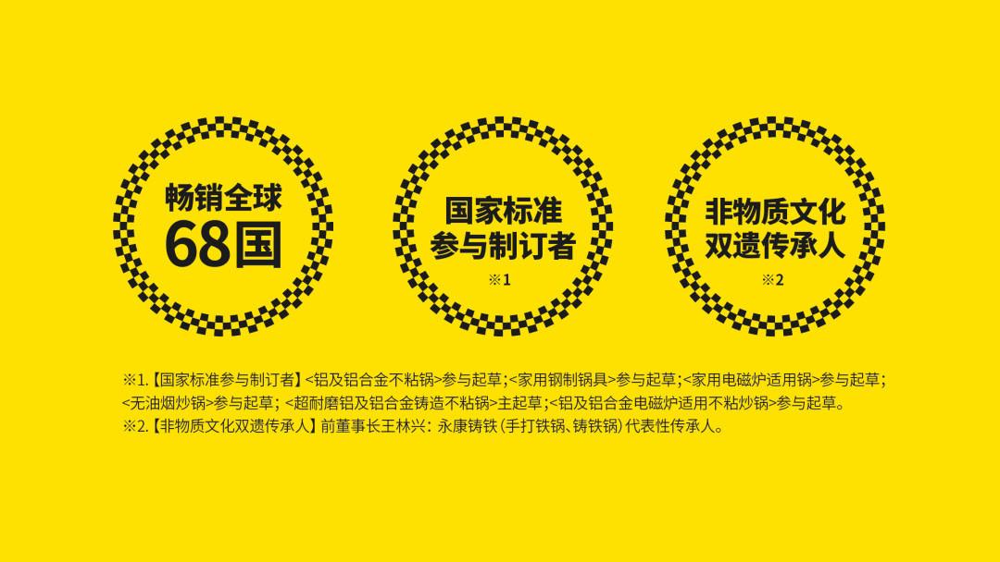